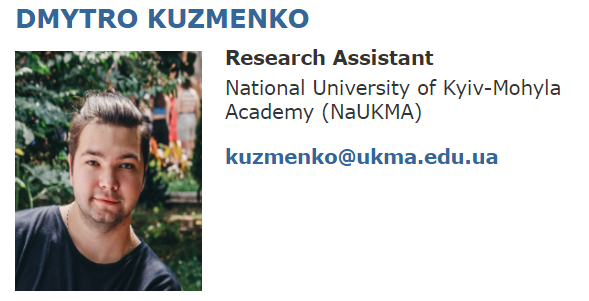
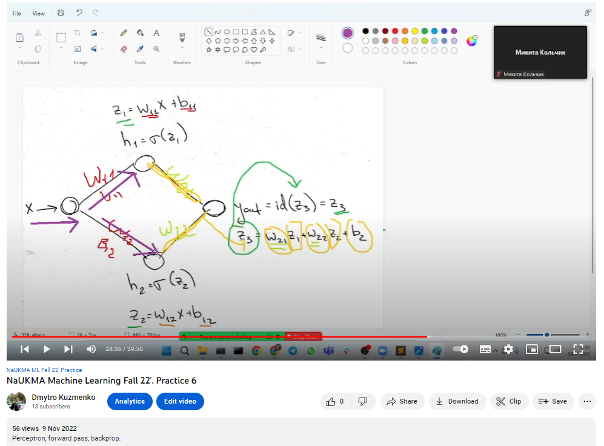
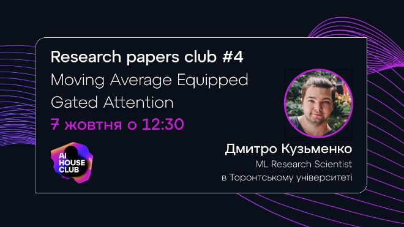
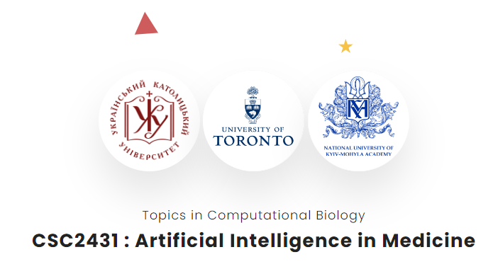
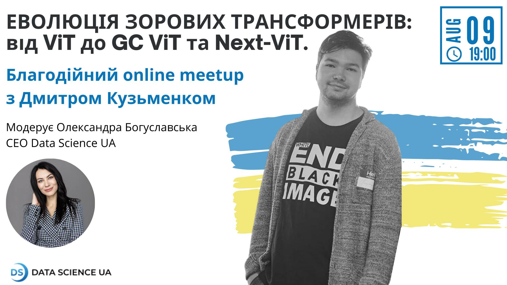
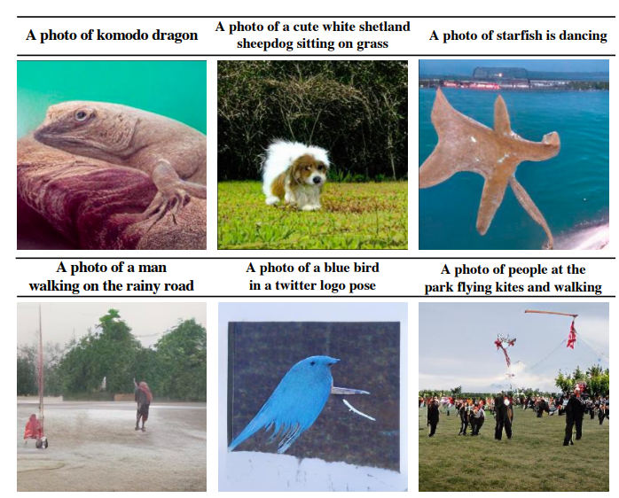

Dmytro Kuzmenko
Greetings!
I am a Data Science Tech Lead, ML researcher, mentor, lecturer, MSc in Applied Mathematics at NaUKMA.
My research directions combine ML, CV, and RL in Healthcare and Assistive Technology. I have devised multiple ML pipelines that are still being used in production. The research focus is on Adversarial Robustness in DL models. Guided many mentees and read a multitude of lectures at different institutions.
Keen on making fresh paper reviews and playing shogi. Striving to expand AI and empower research potential in Ukraine.
Research areas of interest:
➣ Adversarial attacks and adversarial robustness
➣ Semi-supervised learning and transformers in computer vision
➣ Reinforcement learning (single- and multi-agent setups)
For collaboration suggestions and other inquiries reach out to dmytro.o.kuzmenko@gmail.com.
Recent News
- 2023-01: Began teaching a master's course on "Reinforcement Learning" at NaUKMA.
- 2022-12: Got acknowledged as a research assistant and a part of IATSL lab!
- 2022-11: Joined LITSLINK as a Data Science tech lead.
- 2022-10: Created a YouTube channel with recordings of my events and ML/CV master's courses.
- 2022-10: Joined CSC2431: AI in Medicine w/ UoFT, UCU, and NaUKMA as a course instructor.
- 2022-10: Started off as an Assistant Lecturer at NaUKMA!
- 2022-10: Presented a breakdown of fresh-from-the-oven Mega Attention at AI House Paper Club.
- 2022-09: Held a technical talk on the topic of Adversarial Attacks and Robustness at Faculty of CS, NaUKMA.
- 2022-09: Introduced concepts of different ML tasks at Faculty of CS, NaUKMA.
- 2022-08: Gave a tech talk on Vision Transformers at Data Science UA.
- 2022-08: Started mentoring at WWCode.
- 2022-05: Held a lecture on the topic regression in ML, became a Mentor at Projector Institute. Lecture link.
Highlights
|  |
IATSL is a multi-disciplinary group of researchers that develops adaptive and intelligent technologies to enable users to participate fully in their daily activities.
|
|  |
Recordings of practical assignments and lectures from Computer Vision and Machine Learning Master's courses at NaUKMA.
|
|  |
A breakdown of Mega attention, a fresh optimized linear-complexity mechanism with exponential moving average to further improve sequence modeling tasks.
|
|  |
A cooperation course for Ukrainian students from UCU and NaUKMA to work together with senior PhD students from UofT on their theses.
|
|  |
A technical breakdown of the State-of-the-Art hybrid CNN-Transformer architectures with great inference and performance.
|

|
Held an introductory guest lecture on the basics of regression in ML, showcased a full modelling pipeline.
|
|  |
Overview — CLIP-Gen
9 May 2022
The authors propose a self-supervised scheme named CLIP-GEN for general text-to-image generation with the language-image priors extracted with a pre-trained CLIP model.
|

|
An interesting take on zero-shot learning was introduced in a paper that was dated Feb 16.
|

|
The paper generalises curriculum learning for environment generation to multi-agent environments. Teacher-Student Curriculum Learning is used, where an RL-trained teacher samples environments of one or several student agents and is trained alongside the students.
|

|
Dynamic Shifting Network (DS-Net) is proposed, which serves as an effective panoptic segmentation framework in the point cloud realm.
|

|
Overview — Block-Recurrent Transformer
21 Mar 2022
The authors introduce the Block-Recurrent Transformer, which applies a transformer layer in a recurrent fashion along a sequence, and has linear complexity with respect to the sequence length.
|

|
Overview — Video Swin Transformer
16 Mar 2022
Video Swin Transformer advocates an inductive bias of locality in video Transformers, leading to a better speed-accuracy trade-off compared to previous approaches which compute self-attention globally even with spatial-temporal factorization.
|

|
Overview — LipSound2: Self-Supervised Pre-Training for Lip-to-Speech Reconstruction and Lip Reading
13 Mar 2022
The authors propose LipSound2 which consists of an encoder-decoder architecture and location-aware attention mechanism to map face image sequences to mel-scale spectrograms directly without requiring any human annotations.
|